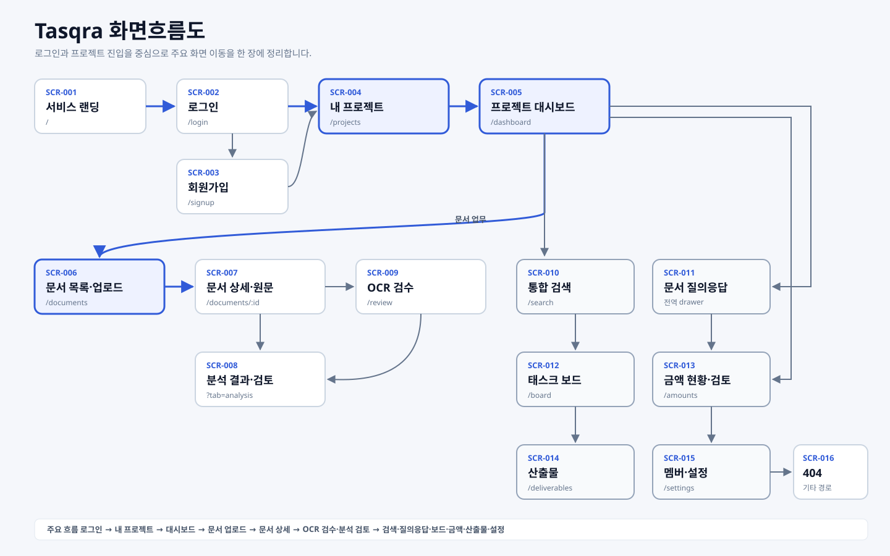
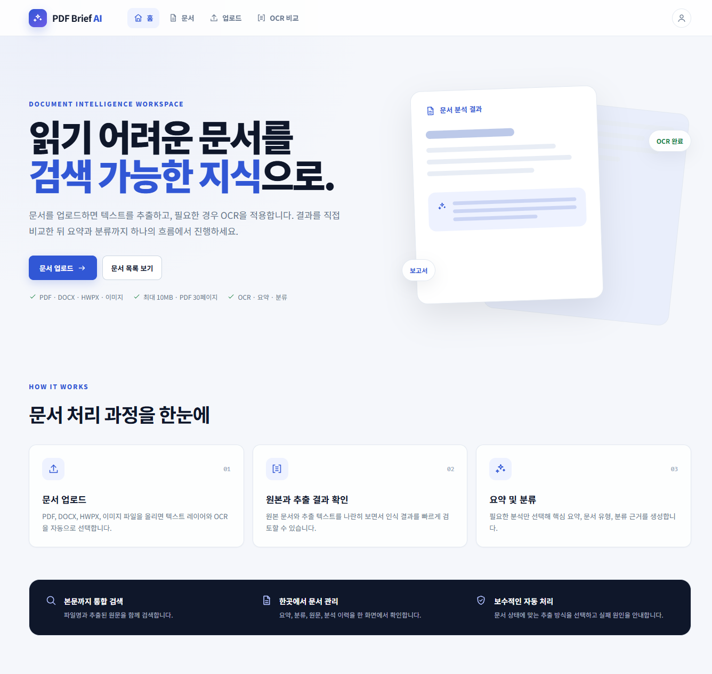
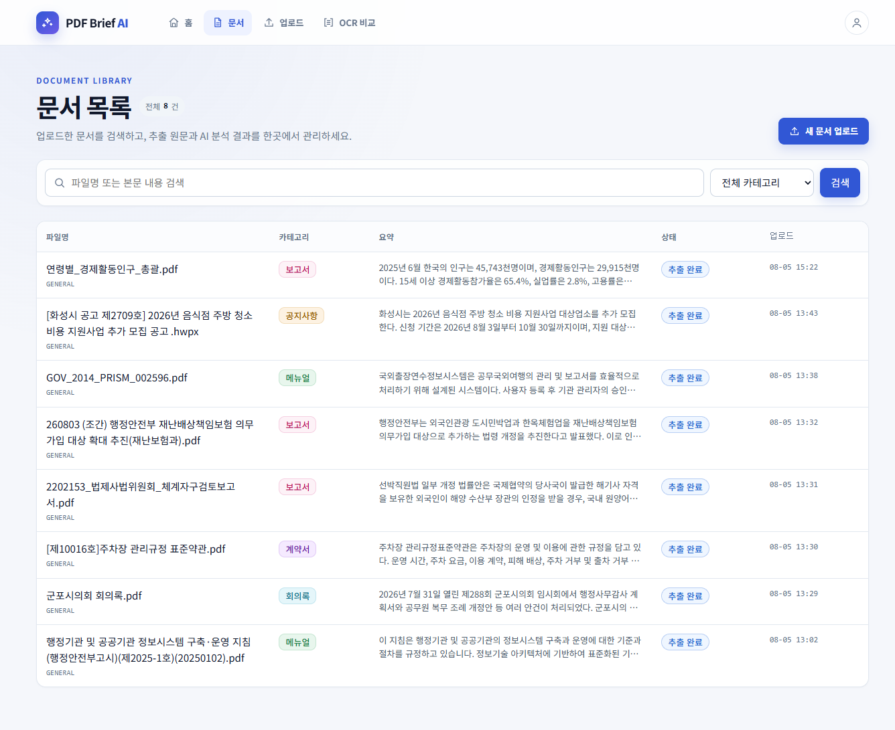
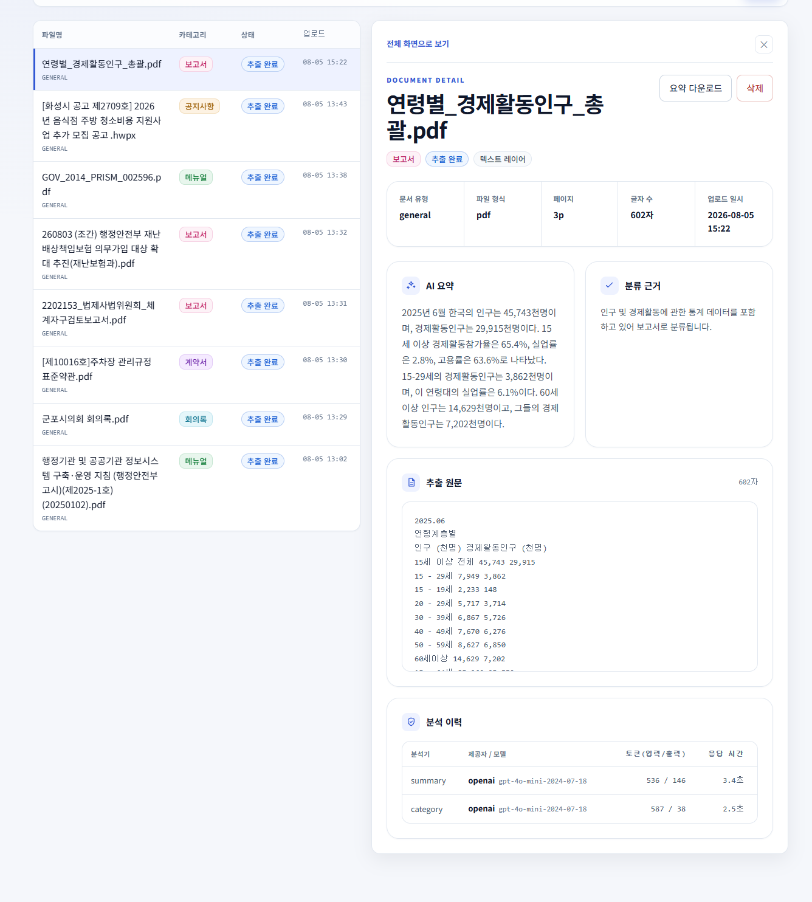
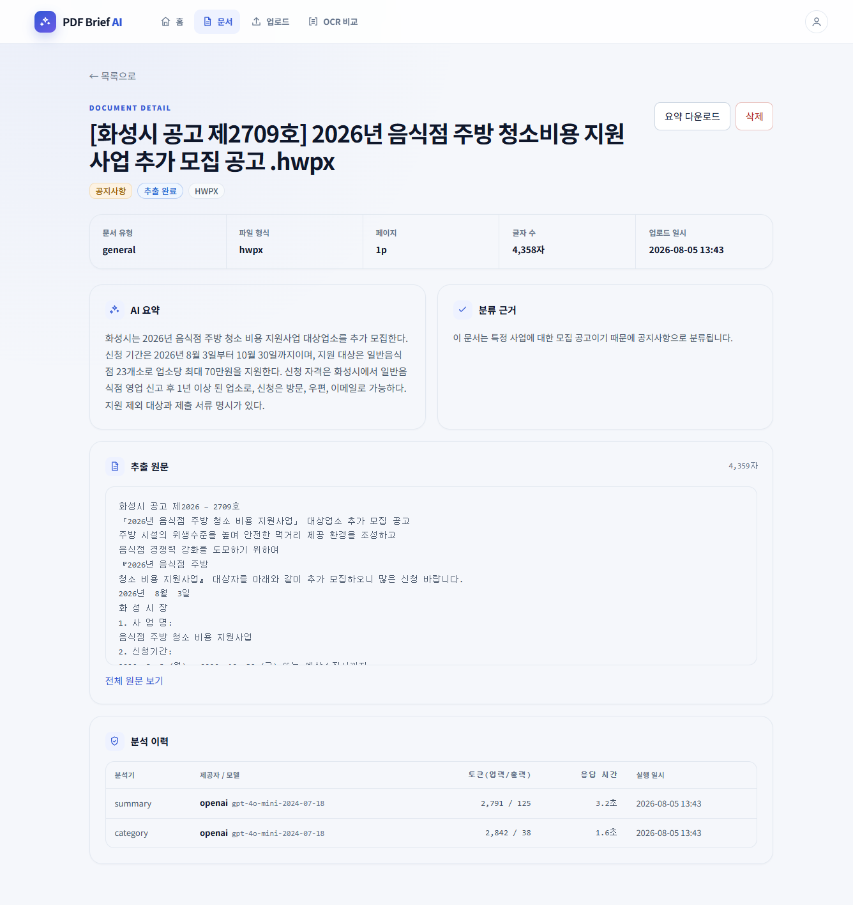
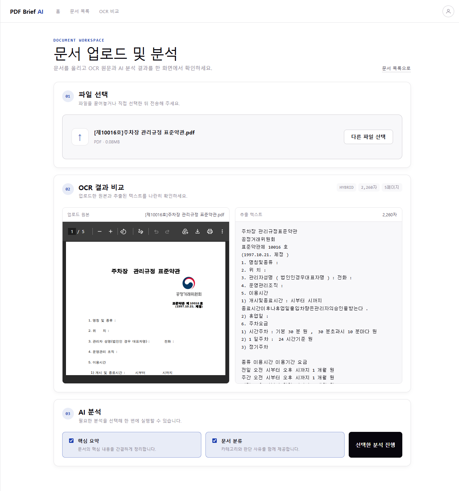
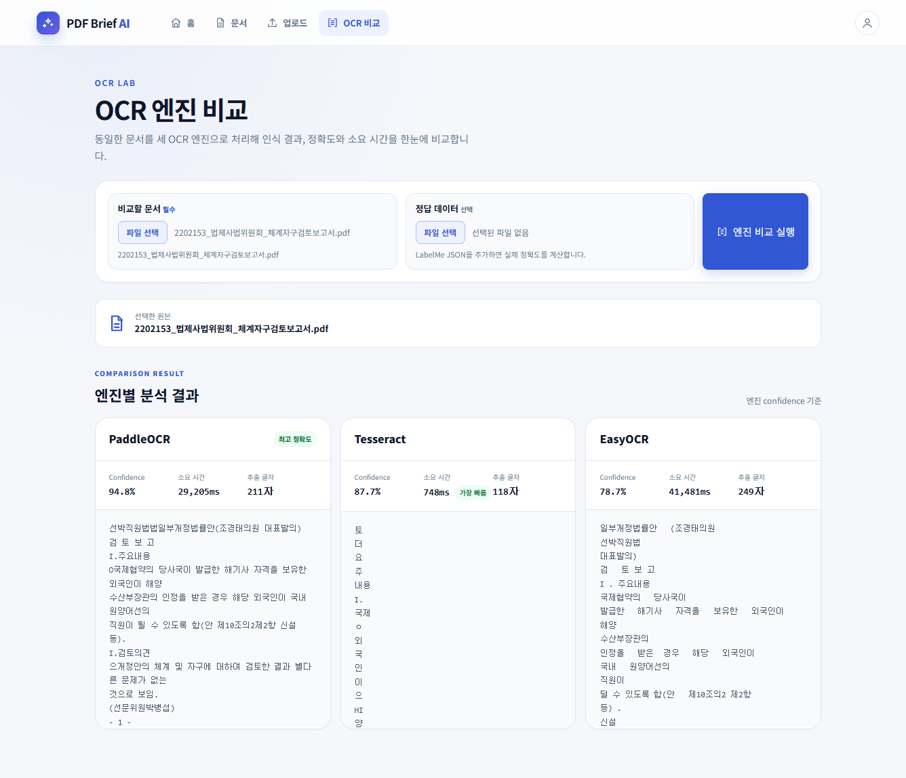
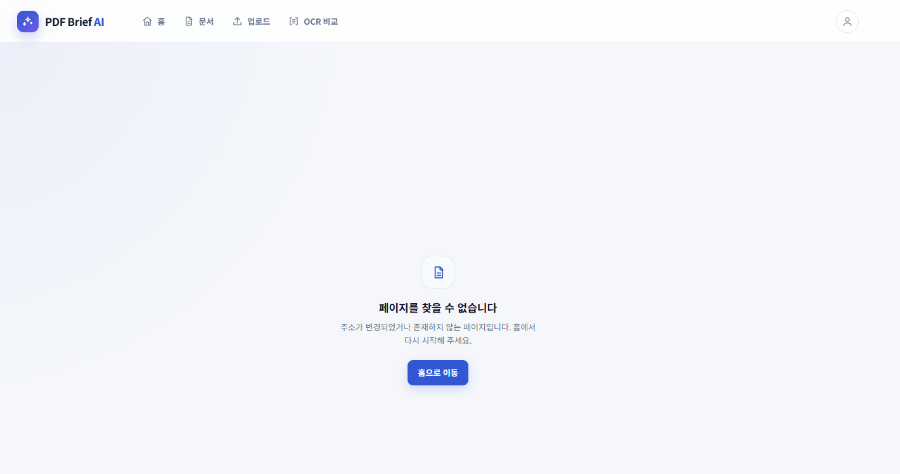

프로젝트 PDF Brief AI — 문서 요약·분류 웹 서비스
작성 김보현 | 작성일 2026-08-05 | 기준 커밋 main (코드 프리즈 시점)
대상 구현 완료된 6개 화면
| 화면 ID | 화면명 | 경로(URL) | 담당 | 접근 권한 |
|---|---|---|---|---|
| HOME | 홈 (서비스 소개) | / |
박세현 | 공개 |
| LIST | 문서 목록 + 상세 패널 | /documents |
김보현 | 공개 |
| DTL | 문서 상세 (전체 화면) | /documents/:id |
김보현 | 공개 |
| UPL | 문서 업로드 및 분석 | /upload |
최재정 | 공개 |
| CMP | OCR 엔진 비교 | /ocr-compare |
박세현 | 공개 |
| NF | 페이지 없음 (404) | 정의되지 않은 모든 경로 | 박세현 | 공개 |
인증 기능은 미니프로젝트 범위에서 제외되었으므로 모든 화면이 공개다. 도입 시의 보호 범위는 부록 D에 정의한다.
모든 화면은 MainLayout을 공유한다. 헤더는 화면마다 다시 그리지 않는다.

| 요소 ID | 유형 | 명칭 | 동작 |
|---|---|---|---|
| CMN-01 | 링크(로고) | PDF Brief AI | / 로 이동 |
| CMN-02 | 네비게이션 | 홈 | / 로 이동. 현재 화면이면 강조 |
| CMN-03 | 네비게이션 | 문서 | /documents 로 이동. 현재 화면이면 강조 |
| CMN-04 | 네비게이션 | 업로드 | /upload 로 이동. 현재 화면이면 강조 |
| CMN-05 | 네비게이션 | OCR 비교 | /ocr-compare 로 이동. 현재 화면이면 강조 |
| CMN-06 | 버튼(아이콘) | 사용자 | 동작 없음 — 인증 기능 삽입 지점 (부록 D) |
업로드 진입점이 두 곳이다. 헤더
업로드메뉴와 문서 목록의새 문서 업로드버튼이 같은 화면으로 연결된다. 결정사항 19에서 "헤더에서 제거하고 목록 버튼으로 통일"로 정했으나, 08-05 프론트엔드 UI 개편에서 헤더 메뉴가 다시 추가되어 현재는 두 경로가 함께 존재한다. 기능상 충돌은 없으며, 진입점 단일화 여부는 본프로젝트에서 재검토한다.
--c-page-x)#1e40af| 항목 | 내용 |
|---|---|
| 목적 | 서비스가 무엇을 하는지 알리고, 업로드·목록 두 진입점으로 안내한다 |
| URL | / |
| 연동 API | 없음 (정적 화면) |

| ID | 유형 | 명칭 | 동작 |
|---|---|---|---|
| HOME-01 | 라벨 | DOCUMENT INTELLIGENCE WORKSPACE | 정적 표시 |
| HOME-02 | 제목 | 읽기 어려운 문서를 검색 가능한 지식으로. | 정적 표시. 핵심 어구만 강조색 |
| HOME-03 | 부제 | 서비스 한 줄 설명 | 추출 → OCR → 비교 → 요약·분류 흐름 안내 |
| HOME-04 | 버튼 | 문서 업로드 | /upload 로 이동 |
| HOME-05 | 버튼 | 문서 목록 보기 | /documents 로 이동 |
| HOME-06 | 제약 안내 | 형식 · 용량 · 기능 | PDF · DOCX · HWPX · 이미지 / 최대 10MB · PDF 30페이지 / OCR · 요약 · 분류 |
| HOME-07 | 일러스트 | 문서 분석 결과 예시 | 정적 이미지. 실제 데이터가 아님 |
| HOME-08 | 카드 3개 | 문서 처리 과정 | 01 문서 업로드 → 02 원본과 추출 결과 확인 → 03 요약 및 분류 |
| HOME-09 | 배너 | 기능 요약 | 본문까지 통합 검색 / 한곳에서 문서 관리 / 보수적인 자동 처리 |
캡처의 빨간 번호가 표의
ID뒷자리와 대응한다 (캡처의01=HOME-01). 번호는 이미지에 그려 넣은 것이 아니라 문서가 겹쳐 표시하므로, 확대해도 선명하다.
┌──────────────────────────────┬────────────────────┐
│ HOME-01 상단 라벨 │ │
│ HOME-02 제목 │ HOME-07 │
│ HOME-03 부제 │ 히어로 일러스트 │
│ HOME-04 HOME-05 진입 버튼 │ │
│ HOME-06 제약 안내 │ │
├──────────────────────────────┴────────────────────┤
│ HOME-08 문서 처리 과정 3단계 카드 │
├───────────────────────────────────────────────────┤
│ HOME-09 기능 요약 배너 (검색 · 관리 · 자동 처리) │
└───────────────────────────────────────────────────┘정적 화면이므로 데이터에 따른 상태 변화가 없다. 버튼과 네비게이션에만 마우스 올림 효과가 있다.
운영 메뉴얼의 "사용 방법" 절과 내용을 공유한다.| 항목 | 내용 |
|---|---|
| 목적 | 업로드된 문서를 검색·조회하고, 선택한 문서의 상세를 같은 화면에서 확인한다 |
| URL | /documents |
| URL 파라미터 | q(검색어) · category(카테고리) · page(페이지) · selected(선택 문서 ID) |
조회 조건과 선택 문서를 모두 URL에 보관한다. 새로고침·뒤로가기·주소 공유 시 같은 화면이 재현된다.

| ID | 유형 | 명칭 | 동작 / 유효성 |
|---|---|---|---|
| LST-01 | 텍스트 | 문서 목록 | 화면 제목 |
| LST-02 | 텍스트 | 전체 N건 | 검색 조건이 있으면 (검색 결과) 병기 |
| LST-03 | 링크(버튼) | 새 문서 업로드 | /upload 로 이동 |
| LST-04 | 입력(search) | 검색어 | 파일명 또는 본문 내용 부분 일치. Enter 또는 LST-06 으로 실행 |
| LST-05 | 선택(select) | 카테고리 | 전체 / 계약서 / 보고서 / 회의록 / 공지사항 / 메뉴얼 / 기타. 선택 즉시 조회 |
| LST-06 | 버튼 | 검색 | 검색어를 URL에 반영하고 1페이지부터 조회 |
| LST-07 | 버튼 | 초기화 | 조건이 있을 때만 표시. 모든 조건 해제 |
| LST-08 | 표 | 문서 목록 | 아래 열 정의 참조 |
| LST-09 | 버튼(링크형) | 파일명 | 클릭 시 이동하지 않고 LST-11 패널에 상세 표시. 해당 행 강조 |
| LST-10 | 페이징 | 이전 / N/M / 다음 | 총 페이지가 2 이상일 때만 표시. 경계에서 비활성 |
| LST-11 | 패널 | 상세 | DocumentDetail 컴포넌트 (DTL 화면의 요소와 동일) |
| LST-12 | 링크 | 전체 화면으로 보기 | /documents/{id} (DTL 화면)으로 이동 |
| LST-13 | 버튼 | 닫기(✕) | 패널을 닫고 표를 5열로 복원 |
캡처의 빨간 번호가 표의
ID뒷자리와 대응한다.0710111213은 이 캡처에 번호가 없다. 조건부로만 나타나는 요소다 —07초기화는 검색 조건이 있을 때,10페이징은 20건을 넘을 때,11~13은 문서를 선택했을 때 표시된다 (아래 패널 열림 캡처와2.6 상태별 표시참조).
패널 열림 (문서 선택 시)

좌측 표에서 파일명(
LST-09)을 누르면 우측에 상세 패널(LST-11)이 열리고, 표가 4열로 좁아진다. 패널 상단에LST-12전체 화면으로 보기,LST-13닫기(✕)가 있다.
패널 닫힘 (기본)
┌──────────────────────────────────────────────────┐
│ LST-01 제목 · 건수 LST-03 업로드 버튼 │
├──────────────────────────────────────────────────┤
│ LST-04 검색어 LST-05 카테고리 LST-06 검색 LST-07 초기화│
├──────────────────────────────────────────────────┤
│ LST-08 문서 표 (5열) │
├──────────────────────────────────────────────────┤
│ LST-10 페이징 │
└──────────────────────────────────────────────────┘패널 열림 (문서 선택 시)
┌───────────────────────┬──────────────────────────┐
│ LST-08 문서 표 (4열) │ LST-11 상세 패널 │
│ 560px 고정 │ (DTL 화면과 동일 컴포넌트) │
│ ※ 스크롤 시 위치 고정 │ │
└───────────────────────┴──────────────────────────┘| 열 | 명칭 | 패널 닫힘 | 패널 열림 | 내용 |
|---|---|---|---|---|
| 1 | 파일명 | 28% | 42% | 파일명 + 하단에 문서 유형 |
| 2 | 카테고리 | 12% | 19% | 카테고리 배지. 분석 전이면 — |
| 3 | 요약 | 34% | 숨김 | 요약 미리보기 100자, 최대 2줄. 분석 전이면 분석 전 |
| 4 | 상태 | 13% | 19% | 상태 배지 |
| 5 | 업로드 | 13% | 20% | MM-DD HH:mm |
패널이 열리면 요약 전문이 패널에 표시되므로 요약 열만 숨긴다.
| 시점 | 메서드 | 엔드포인트 | 파라미터 |
|---|---|---|---|
| 진입 · 조건 변경 | GET | /api/documents |
q document_type category page size=20 |
| 파일명 선택 | GET | /api/documents/{id} |
- |
| 패널 내 분석 실행 | POST | /api/documents/{id}/analyze |
analyzer_types |
| 패널 내 다운로드 | GET | /api/documents/{id}/download |
format=txt |
| 패널 내 삭제 | DELETE | /api/documents/{id} |
- |
목록 응답 { items, page, size, total, total_pages }
항목 필드 id · filename · document_type · status · category · summary_preview · created_at
| 상태 | 표시 |
|---|---|
| 조회 중 | 스피너 + 문서를 불러오는 중입니다… |
| 문서 없음 | 표 안에 업로드된 문서가 없습니다. 먼저 문서를 업로드해 주세요. |
| 검색 결과 없음 | 표 안에 조건에 맞는 문서가 없습니다. |
| 조회 실패 | 에러 배너 + 다시 시도 버튼 |
| 패널 조회 중 | 패널 안에 스피너 |
| 패널 동작 실패 | 문서 내용을 유지한 채 패널 상단에 에러 배너 |
조회 실패와 동작(분석·다운로드) 실패를 구분한다. 다운로드가 실패해도 보고 있던 문서가 사라지지 않는다.
Enter/버튼으로만 실행한다. 입력 중 매 글자마다 조회하지 않는다 (조회 부하 방지).sticky). 화면 폭 1100px 이하에서는 위아래로 쌓이고 고정이 해제된다.| 항목 | 내용 |
|---|---|
| 목적 | 문서 1건의 요약·분류 근거·원문·분석 이력을 넓은 화면에서 확인하고, 분석·다운로드를 실행한다 |
| URL | /documents/:id |

| 요소 ID | 유형 | 명칭 | 동작 / 규칙 |
|---|---|---|---|
| DTL-01 | 버튼 | ← 목록으로 | 직전 화면이 목록이면 뒤로가기(검색 조건·페이지 유지). 주소로 직접 진입한 경우 /documents 로 이동 |
| DTL-02 | 텍스트 | 파일명 | 길면 줄바꿈. 레이아웃을 밀지 않음 |
| DTL-03 | 버튼 | AI 분석 실행 | 분석 이력이 없을 때만 표시. 실행 중 분석 중… 으로 바뀌고 비활성 |
| DTL-04 | 버튼 | 요약 .txt 다운로드 | 분석 이력이 없으면 비활성 + 안내 분석을 먼저 실행해야 합니다 |
| DTL-05 | 배지 | 카테고리 / 상태 / 추출방식 | 값이 없으면 — |
| DTL-06 | 정의 목록 | 유형 · 형식 · 페이지 · 글자 수 · 업로드 | 한 줄 배치. 값 없으면 - |
| DTL-07 | 텍스트 | AI 요약 | 강조색 좌측 선. 최대 높이 제한 후 내부 스크롤. 미분석 시 아직 분석되지 않았습니다 |
| DTL-08 | 텍스트 | 분류 근거 | 분류 결과가 있을 때만 표시 |
| DTL-09 | 텍스트(원문) | 추출 원문 | 기본 700자까지 접힘. 전체 보기 클릭 시 전체 표시(최대 높이 제한 + 내부 스크롤) |
| DTL-10 | 버튼 | 삭제 | 확인 창 승인 후 문서·추출 원문·분석 결과·원본 파일을 삭제. 삭제 후 목록으로 이동(뒤로가기로 되돌아갈 수 없게 주소를 대체) |
| DTL-11 | 표 | 분석 이력 | 분석기 / 제공자·모델 / 토큰(입력·출력) / 응답 시간 / 실행 일시 |
캡처의 빨간 번호가 표의
ID뒷자리와 대응한다.03은 이 캡처에 번호가 없다.AI 분석 실행버튼은 분석 결과가 없을 때만 표시되며, 이 문서는 이미 요약·분류가 완료된 상태다 (3.5 상태별 표시참조).
DTL-01 ← 목록으로
────────────────────────────────────────────
DTL-02 파일명 DTL-03 분석 DTL-04 다운로드
DTL-05 배지 (카테고리 · 상태 · 추출방식)
────────────────────────────────────────────
DTL-06 메타 정보 (한 줄)
DTL-07 AI 요약
DTL-08 분류 근거
DTL-09 추출 원문 (접기/펼치기)
DTL-11 분석 이력 (표)| 시점 | 메서드 | 엔드포인트 |
|---|---|---|
| 진입 | GET | /api/documents/{id} |
| DTL-03 | POST | /api/documents/{id}/analyze → 성공 후 상세 재조회 |
| DTL-04 | GET | /api/documents/{id}/download?format=txt |
| DTL-10 | DELETE | /api/documents/{id} → 204 No Content |
{원본파일명}_요약.txt 이며, 서버가 Content-Disposition에 UTF-8로 인코딩해 전달한다(한글 파일명 대응).| 상태 | 표시 |
|---|---|
| 조회 중 | 스피너 |
| 조회 실패 | 에러 배너 + 다시 시도 + 문서 목록으로 이동 링크 |
| 분석/다운로드 실패 | 문서를 유지한 채 상단에 에러 배너 |
| 원문 없음 | 추출된 텍스트가 없습니다. |
| 분석 이력 없음 | 분석 이력 영역 자체를 표시하지 않음 |
| 삭제 진행 중 | 삭제 버튼이 삭제 중… 으로 바뀌고 비활성 |
| 삭제 취소 | 확인 창에서 취소하면 아무 동작도 하지 않음 |
분석 이력은 재분석 시 행이 누적된다. 응답 시간은 분량 제한값(45,000자) 적정성 검토의 근거 자료로 사용한다.| 항목 | 내용 |
|---|---|
| 목적 | 문서를 업로드하고, 추출 결과를 원본과 비교하며, 필요한 AI 분석을 선택 실행한다 |
| URL | /upload |
| 진입 경로 | LIST 화면의 새 문서 업로드(LST-03). 헤더 메뉴에는 노출하지 않는다 |

| 요소 ID | 유형 | 명칭 | 필수 | 동작 / 유효성 |
|---|---|---|---|---|
| UPL-01 | 텍스트 | 문서 업로드 및 분석 | - | 화면 제목 |
| UPL-02 | 링크 | 문서 목록으로 | - | /documents 로 이동 |
| UPL-03 | 드롭존 | 파일 끌어놓기 영역 | 필수 | 드래그 중 강조. 파일 1건 |
| UPL-04 | 버튼 | 파일 선택 / 다른 파일 선택 | - | 파일 탐색기 열기 |
| UPL-05 | 텍스트 | 선택 파일 정보 | - | 파일명 · 확장자 · 크기(MB) |
| UPL-06 | 버튼 | 선택 취소 | - | 선택·결과 초기화 |
| UPL-07 | 버튼 | OCR 전송 | - | 업로드 실행. 명칭 변경 예정 → 업로드 및 추출 (부록 E) |
| UPL-08 | 미리보기 | 업로드 원본 | - | 이미지는 그대로, PDF는 브라우저 내장 뷰어. DOCX·HWPX는 미리보기 미지원 안내 |
| UPL-09 | 텍스트 | 추출 텍스트 | - | 추출 결과 전문 + 글자 수 |
| UPL-10 | 텍스트 | 추출 통계 | - | 추출 방식 · 글자 수 · 페이지 수 |
| UPL-11 | 체크박스 | 핵심 요약 | 선택 | 기본 선택 |
| UPL-12 | 체크박스 | 카테고리 분류 | 선택 | 기본 선택 |
| UPL-13 | 버튼 | 분석 실행 | - | UPL-11·31 중 하나 이상 필수. 미선택 시 안내 표시 |
캡처의 빨간 번호가 표의
ID뒷자리와 대응한다.0607은 이 캡처에 번호가 없다.06선택 취소와07전송 버튼은 파일을 고른 뒤 아직 전송하지 않은 상태에서만 표시된다. 이 캡처는 이미 추출까지 끝난 상태다.
이 캡처는 08-05 UI 개편 이전 화면이다. 헤더가
홈 · 문서 목록 · OCR 비교로 되어 있어 다른 캡처(홈·문서 목록·문서 상세)의 헤더와 다르다. 재촬영이 필요하다.
| 항목 | 기준 | 위반 시 |
|---|---|---|
| 확장자 | pdf docx hwpx png jpg jpeg |
화면에서 즉시 안내 (전송 안 함) |
| 파일 크기 | 10MB 이하 | 화면에서 즉시 안내 |
| 페이지 수 | PDF 30페이지 이하 | 서버 TOO_MANY_PAGES |
| 추출 글자 수 | 45,000자 이하 | 서버 CONTENT_TOO_LARGE |
확장자·크기는 화면에서 먼저 검사해 불필요한 전송을 막고, 페이지 수·글자 수는 추출 과정에서 서버가 검사한다.
UPL-01 제목 · 설명 UPL-02 문서 목록으로
────────────────────────────────────────────────────────
[01] UPL-03 파일 선택 (드롭존)
────────────────────────────────────────────────────────
[02] UPL-08 추출 결과 비교
┌─ 업로드 원본 ─┬─ 추출 텍스트 ─┐
│ 미리보기 │ 추출 결과 │
└──────────────┴──────────────┘
────────────────────────────────────────────────────────
[03] UPL-11 AI 분석 (요약 / 분류 선택 실행)| 시점 | 메서드 | 엔드포인트 |
|---|---|---|
| UPL-07 | POST | /api/documents (multipart, file) |
| 업로드 직후 | GET | /api/documents/{id} — 추출 원문 조회 |
| UPL-13 | POST | /api/documents/{id}/analyze |
| 상태 | 표시 |
|---|---|
| 업로드 중 | 스피너 + OCR 작업이 진행 중입니다… + 안내 문구 |
| 업로드 전 | 02·03 영역 미표시 |
| 미리보기 불가 형식 | 확장자 표기 + 이 형식은 브라우저 미리보기를 지원하지 않습니다 |
| 추출 텍스트 없음 | 추출된 텍스트가 없습니다. |
| 실패 | 화면 상단 에러 배너 |
--c-page-x 적용으로 통일 예정 (부록 E)| 항목 | 내용 |
|---|---|
| 목적 | 같은 문서를 PaddleOCR · Tesseract · EasyOCR 세 엔진으로 처리해 정확도와 소요시간을 비교한다 |
| URL | /ocr-compare |
| 배경 | 결정사항 1(OCR 엔진 = PaddleOCR)의 근거였던 "한국어 정확도"를 주장이 아니라 실측으로 확인하기 위한 화면 |

| 요소 ID | 유형 | 명칭 | 필수 | 동작 / 유효성 |
|---|---|---|---|---|
| CMP-01 | 텍스트 | OCR 엔진 비교 | - | 제목 + 정확도 지표 설명 |
| CMP-02 | 입력(file) | 비교할 파일 | 필수 | 이미지(PNG·JPG·BMP·TIF·WEBP·GIF) 및 PDF · DOCX · HWPX. 문서는 첫 페이지 또는 첫 이미지를 변환해 비교 |
| CMP-03 | 입력(file) | 정답 데이터 | 선택 | LabelMe 형식 JSON. 제공 시 실제 정확도를 계산 |
| CMP-04 | 버튼 | 비교 실행 | - | 파일 미선택 시 비활성. 실행 중 비교 실행 중... |
| CMP-05 | 미리보기 | 선택 파일 | - | 변환된 이미지를 표시 |
| CMP-06 | 결과 카드 | PaddleOCR | - | 정확도 · 소요시간 · 추출 글자 수 · 인식 텍스트 |
| CMP-07 | 결과 카드 | Tesseract | - | 동일 구성 |
| CMP-08 | 결과 카드 | EasyOCR | - | 동일 구성 |
| CMP-09 | 배지 | 더 정확함 / 더 빠름 | - | 엔진 간 값을 비교해 우세한 쪽에만 표시. 값이 같으면 미표시 |
캡처의 빨간 번호가 표의
ID뒷자리와 대응한다. 9개 요소가 모두 표시된 상태다.
화면 문구와 표기가 다른 곳 — 화면에는 우세 표시가
최고 정확도·가장 빠름으로, 정확도 항목이Confidence로 표기된다. 정답 데이터를 올리지 않아 신뢰도 평균을 대용 지표로 쓰고 있음을 화면 우측엔진 confidence 기준문구로 알린다 (5.6 비고 참조).
| 항목 | 기준 | 위반 시 에러 코드 |
|---|---|---|
| 파일명 | 존재해야 함 | INVALID_FILE_TYPE |
| 확장자 | 이미지 6종 또는 PDF · DOCX · HWPX | INVALID_FILE_TYPE |
| 파일 크기 | 10MB 이하 | FILE_TOO_LARGE |
| 파일 내용 | 빈 파일 불가 / 이미지로 변환 가능해야 함 | EXTRACTION_FAILED |
| 정답 데이터 | LabelMe JSON 형식 | 형식 오류 시 안내 |
CMP-01 제목 · 설명 (정확도 지표의 의미 명시)
────────────────────────────────────────────
CMP-02 비교할 파일 선택
CMP-03 정답 데이터 선택 (선택) CMP-04 비교 실행
CMP-05 미리보기
────────────────────────────────────────────
┌── PaddleOCR ──┬── Tesseract ──┬── EasyOCR ──┐
│ 정확도 │ 정확도 │ 정확도 │
│ 소요시간 │ 소요시간 │ 소요시간 │
│ 추출 글자 수 │ 추출 글자 수 │ 추출 글자 수 │
│ 인식 텍스트 │ 인식 텍스트 │ 인식 텍스트 │
└───────────────┴───────────────┴─────────────┘
CMP-06 CMP-07 CMP-08| 시점 | 메서드 | 엔드포인트 | 요청 |
|---|---|---|---|
| CMP-04 | POST | /api/ocr-compare |
multipart — file (필수) · ground_truth (선택) |
응답 — 엔진 3종(paddle · tesseract · easyocr) 각각에 대해
| 필드 | 화면 표시 |
|---|---|
ground_truth_accuracy |
정답 데이터를 올린 경우의 정확도(%). 편집거리 기반으로 계산 |
avg_confidence |
정답 데이터가 없을 때 사용하는 대용 지표(%) |
elapsed_ms |
소요시간 — 천 단위 구분 + ms |
char_count |
추출 글자 수 — 천 단위 구분 + 자 |
text |
인식 텍스트. 비어 있으면 (인식된 텍스트 없음) |
화면의
정확도항목은 정답 데이터가 있으면ground_truth_accuracy, 없으면avg_confidence를 표시한다. 어느 지표를 쓰고 있는지 화면 설명문에 함께 안내한다.
| 상태 | 표시 |
|---|---|
| 실행 중 | 스피너 + 세 엔진으로 OCR을 실행하는 중입니다… |
| 실행 전 | 결과 카드 미표시 |
| 실패 | 에러 배너 + 다시 시도(파일이 선택된 경우) |
| 인식 결과 없음 | 카드 내부에 (인식된 텍스트 없음) |
| 정답 데이터 없음 | 정확도가 신뢰도 기반 대용 지표임을 안내 |
정답 데이터를 함께 올리면 실제 정확도를 계산한다. 정답 텍스트와 OCR 결과의 편집거리(문자 단위 오류율) 를 비교하는 방식이므로, 오탈자·누락·삽입이 모두 반영된 값이다.
정답 데이터가 없을 때는 각 엔진이 자체적으로 보고하는 인식 신뢰도(confidence) 평균을 대용으로 사용한다. 이 경우 실제 정오 비교가 아니므로, 화면 설명문에 그 사실을 명시해 지표가 과대 해석되지 않게 한다.
Spinner · ErrorBanner)와 디자인 토큰(.c-scope)을 사용한다.성능 주의 — 세 엔진을 순차 실행하므로 이미지 1장당 총 소요 시간이 길다. 실행 중 CPU 사용률이 높아지므로, 발표 시연에서는 실시간 실행 대신 사전에 측정한 결과를 사용하는 것을 권한다.
| 항목 | 내용 |
|---|---|
| 목적 | 정의되지 않은 주소로 접근했을 때 상황을 알리고 정상 화면으로 돌아갈 경로를 제공한다 |
| URL | 정의된 5개 경로에 해당하지 않는 모든 주소 (예: /zzzz) |
| 연동 API | 없음 (정적 화면) |

| 요소 ID | 유형 | 명칭 | 동작 |
|---|---|---|---|
| NF-01 | 안내 문구 | 페이지를 찾을 수 없음 | 요청한 주소가 존재하지 않음을 알린다 |
| NF-02 | 버튼 | 복귀 | 홈 또는 문서 목록으로 이동한다 |
캡처의 빨간 번호가 표의
ID뒷자리와 대응한다. 공통 헤더(CMN-01~CMN-06)가 그대로 유지되므로 이 화면에서도 네비게이션으로 이동할 수 있다.
App.jsx 의 catch-all 라우트(path="*")가 처리한다. 정의된 5개 경로가 모두 어긋날 때만 표시된다.MainLayout)를 그대로 유지하므로, 이 화면에서도 헤더 네비게이션으로 이동할 수 있다.08-05 이전에는 이 화면이 없었다. 정의되지 않은 주소로 접근하면 헤더조차 없는 빈 흰 화면이 표시되어, 사용자가 오류인지 로딩 중인지 구분할 수 없었다.
catch-all 라우트 한 줄로 해결됐다.없는 문서 번호(
/documents/999999)는 이 화면이 아니라 DTL 화면의 오류 상태로 처리된다. 경로는 정의되어 있고 데이터만 없는 상황이므로,DOCUMENT_NOT_FOUND(404) 응답을 받아ErrorBanner와 목록 이동 링크를 표시한다 (3.5 상태별 표시 참조).
| 컴포넌트 | 용도 | 사용 화면 |
|---|---|---|
| Badge | 카테고리·상태·추출방식 라벨 | LIST · DTL |
| Spinner | 조회·처리 대기 표시 | LIST · DTL · UPL · CMP |
| ErrorBanner | 에러 표시 (코드별 안내 + 재시도) | LIST · DTL · UPL · CMP |
| DocumentDetail | 상세 표현 (API 호출 없음) | LIST 패널 · DTL |
| PageHeader | 화면 제목·부제·상단 라벨·우측 동작 버튼 | LIST · UPL · CMP |
| EmptyState | 결과 없음 안내 (검색 결과 0건 · 문서 없음) | LIST |
| Icon | 네비게이션·버튼 아이콘 | 전 화면 |
PageHeader·EmptyState·Icon은 08-05 프론트엔드 UI 개편에서 추가됐다. 화면마다 제목·빈 상태를 각자 그리던 것을 컴포넌트로 모아, 표시 방식이 자동으로 통일된다.
색상·간격·글자 크기는
styles/tokens.css한 곳에서 정의한다. 화면을 누가 만들어도 표시가 통일된다.
계약서 · 보고서 · 회의록 · 공지사항 · 메뉴얼 · 기타
— 로 표시한다.기타는 5종에 속하지 않는 문서를 위한 값이며, 분류기가 억지로 특정 값을 고르지 않도록 둔 항목이다.| 코드 | 화면 표시 | 색 계열 |
|---|---|---|
PENDING |
대기 | 중립 |
EXTRACTING |
추출 중 | 정보 |
EXTRACTED |
추출 완료 | 정보 |
ANALYZING |
분석 중 | 주의 |
COMPLETED |
완료 | 성공 |
FAILED |
실패 | 위험 |
| 코드 | 화면 표시 | 의미 |
|---|---|---|
TEXT_LAYER |
텍스트 레이어 | 문서의 글자 정보를 그대로 사용 |
OCR |
OCR | 이미지에서 글자를 인식 |
HYBRID |
혼합 | 텍스트와 이미지 OCR을 함께 사용 |
DOCX |
DOCX | DOCX 전용 추출 |
HWPX |
HWPX | HWPX 전용 추출 |
에러 응답은 { code, message, request_id, errors } 형식이며, 화면은 message를 그대로 노출하고 코드별 보조 안내를 덧붙인다. code와 request_id는 작은 코드 박스로 표시해 서버 로그와 대조할 수 있게 한다.
| 코드 | HTTP | 화면 보조 안내 |
|---|---|---|
INVALID_FILE_TYPE |
400 | PDF, DOCX, HWPX, PNG, JPG 파일만 업로드할 수 있습니다. |
FILE_TOO_LARGE |
413 | 파일 크기를 10MB 이하로 줄여 다시 시도해 주세요. |
TOO_MANY_PAGES |
413 | 30페이지 이하로 나누어 업로드해 주세요. |
CONTENT_TOO_LARGE |
413 | 문서 분량이 허용 범위를 넘었습니다. 일부만 잘라 업로드해 주세요. |
EXTRACTION_FAILED |
422 | 문서에서 글자를 찾지 못했습니다. 스캔 품질을 확인해 주세요. |
DOCUMENT_NOT_FOUND |
404 | 삭제되었거나 잘못된 주소일 수 있습니다. 목록으로 돌아가 주세요. |
NOT_EXTRACTED_YET |
409 | 문서 상세 화면에서 분석을 먼저 실행해 주세요. |
ANALYZER_NOT_FOUND |
400 | 요약 또는 분류 중 하나 이상을 선택해 주세요. |
AI_PROVIDER_ERROR |
502 | AI 서비스 응답에 실패했습니다. 잠시 후 다시 시도해 주세요. |
AI_TIMEOUT |
504 | 문서 분량이 많아 시간이 초과되었습니다. 잠시 후 다시 시도해 주세요. |
INTERNAL_ERROR |
500 | (보조 안내 없음 — 서버 메시지만 표시) |
미니프로젝트 범위에서 제외한 항목과, 추가 시의 삽입 위치를 명시한다. 화면 구조를 수정하지 않고 확장할 수 있도록 설계되어 있다.
| 확장 항목 | 삽입 지점 | 현재 상태 |
|---|---|---|
| 로그인 / 회원가입 | 화면: MainLayout 헤더 우측 사용자 버튼(CMN-06) → /login · /signup<br>코드: App.jsx 라우트 트리를 ProtectedRoute 로 감싼다 |
버튼 자리와 라우트 구조 확보 |
| 보호 범위 | 공개 = HOME · /login · /signup<br>보호 = LIST · DTL · UPL |
미적용 |
| PDF 형식 다운로드 | 다운로드 API의 format 파라미터. 현재 txt만 허용하도록 제한되어 있어, 허용 값을 넓히면 추가된다 (.txt 는 유지 — 교체 아님) |
파라미터 정의 완료 |
| 영역별 추출 결과 수정 | UPL-08 / UPL-09 비교 화면을 편집 가능하게 확장. 추출 단계에서 좌표·신뢰도 데이터가 이미 산출되고 있다 | 읽기 전용 비교까지 구현 |
| 항목 | 내용 | 담당 |
|---|---|---|
| UPL-07 명칭 | OCR 전송 → 업로드 및 추출. 텍스트 레이어만 사용되는 경우도 있어 현재 명칭이 오해를 유발 |
최재정 |
| UPL 좌우 여백 | 다른 화면과 다름. var(--c-page-x) 적용으로 통일 |
최재정 |
| AI 요약 품질 | 개발용 대체 클라이언트 사용 중이라 요약·분류 결과가 정상 값이 아니다. 실제 연동 후 재확인 필요 | 전원 |
┌──────────┐ ┌──────────────┐
│ HOME │────────│ CMP │ OCR 엔진 비교
└────┬─────┘ 헤더 └──────────────┘
│ 헤더 · 문서 목록
▼
┌────────────► ┌──────────────┐ ──────────┐
│ │ LIST │ │ 파일명 선택
│ │ 검색 · 조회 │ ▼
│ └──────┬───────┘ ┌───────────────┐
│ 문서 목록으로 │ 새 문서 │ LST-11 패널 │
│ │ 업로드 │ (상세) │
│ ▼ └───────┬───────┘
│ ┌──────────────┐ │ 전체 화면으로
└──────────────│ UPL │ ▼
│ 업로드 · 분석 │ ┌──────────────┐
└──────────────┘ │ DTL │
│ 상세 · 다운로드│
└──────────────┘
│ ← 목록으로
└──────► LIST주 사용 흐름
HOME → LIST → 새 문서 업로드 → UPL(업로드 · 추출 · 분석) → 문서 목록으로 → LIST(파일명 선택) → 패널에서 확인 → 요약 .txt 다운로드